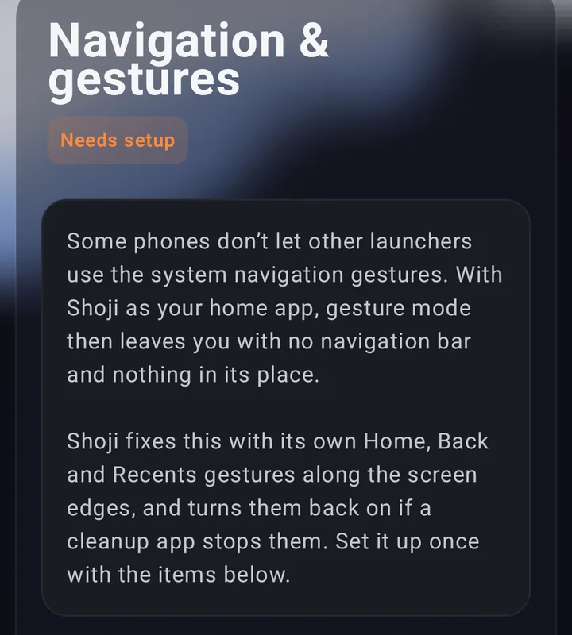
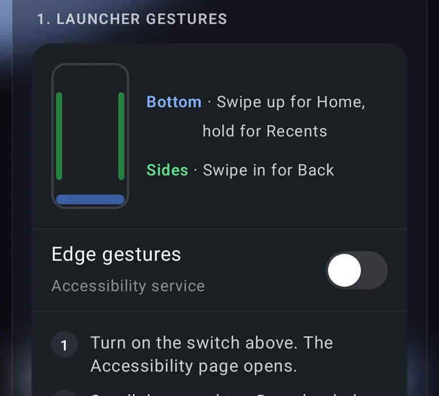
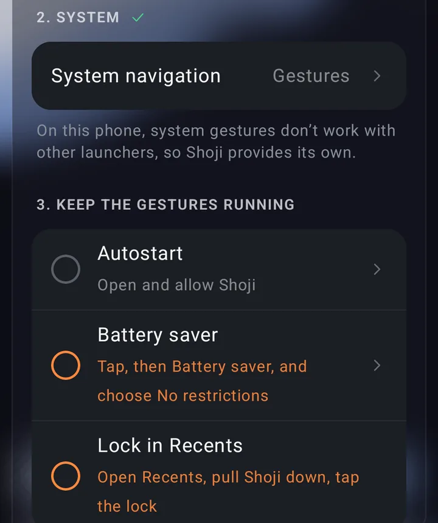
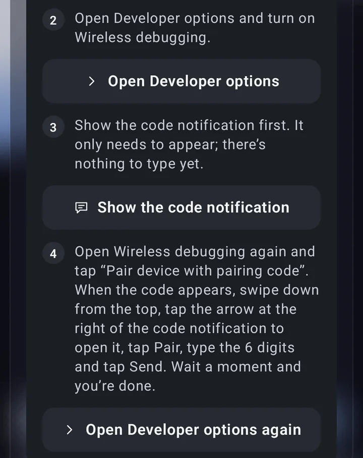
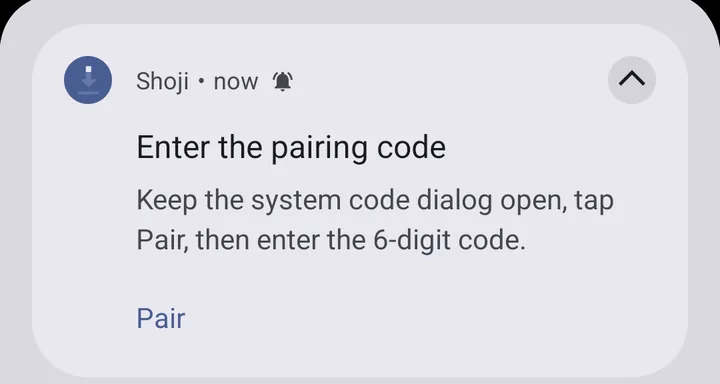
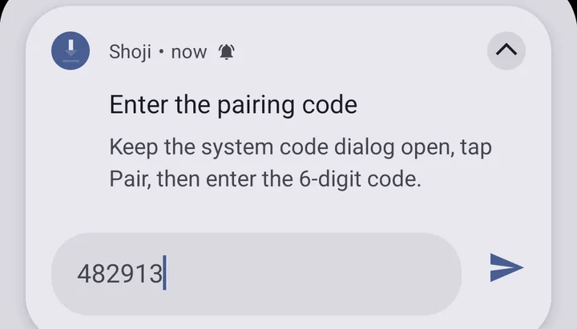

Why Xiaomi drops gestures when you change launcher
On HyperOS and MIUI, gesture navigation runs together with Xiaomi's own launcher (System Launcher). Set another launcher as home and the phone either won't let you pick Full screen gestures, hides the buttons with nothing in their place, or puts the three buttons back after every reboot.
Xiaomi's launcher
Gestures work, but you're stuck with Xiaomi's home screen.
Any other launcher
Three buttons only, or no way left to get home.
Shoji fixes this inside the launcher: it lays thin touch strips along the bottom and both sides, and turns a swipe on them into the system's own action.
- Bottom: swipe up for Home, swipe up and hold for Recents.
- Sides: swipe in from the left or right for Back.
The strips only appear while the phone is in gesture mode, so they never sit over the buttons.
Set it up in 5 steps
Everything is in Shoji › Settings › Navigation & gestures. It's a checklist done in order, and each item ticks itself once done.

-
Install Shoji and make it your home screen
Get Shoji on Google Play, open it, go through the welcome pages and tap Get started. When Android asks for a home app, pick Shoji.
-
Turn on Edge gestures
Turn on Edge gestures. Shoji explains it and asks for your consent, then the phone opens its Accessibility page:
- Scroll down and tap Downloaded apps.
- Tap Edge gestures.
- Turn on Use Edge gestures, then come back to Shoji.
Leave Edge gestures (backup) alone: Shoji uses it by itself when it brings the gestures back. The service doesn't read anything on your screen.

Item 1: the bottom and side strips, and the Edge gestures switch. -
Switch system navigation to gestures
Tap System in the checklist. The phone's System navigation page opens: choose Gestures. The buttons go away and Shoji's strips take their place at once.
-
Keep the gestures running
Xiaomi's cleanup likes to close apps in the background. Three small things keep Shoji alive:
- Autostart: tap it and allow Shoji.
- Battery saver: tap it, then Battery saver, and choose No restrictions.
- Lock in Recents: open Recents, pull Shoji down and tap the lock.

Item 2 done (ticked); item 3 still shows orange circles to do. -
Turn on auto-restore (one time, Android 12 and later)
This lets Shoji turn its gestures back on within a minute after a cleanup, and after every reboot. Tap Set up on this phone and follow the four steps it shows:
- Turn on Developer options: open Settings › About phone and keep tapping the HyperOS or MIUI version until it confirms.
- Turn on Wireless debugging (the phone needs to be on Wi-Fi).
- Show Shoji's code notification.
- Open Developer options › Wireless debugging again and tap Pair device with pairing code. When the code appears, swipe down, tap the arrow at the right of the code notification, tap Pair, type the 6 digits and tap Send.
The phone pairs with itself to give Shoji the permission to switch its gestures back on. Nothing leaves the phone and no computer is needed.

Auto-restore steps 2 to 4, each with a button to the right settings page. 
Open the notification and tap Pair. 
Type the 6-digit pairing code and tap send.
After a reboot
Shoji is the home screen right behind the lock screen, so Xiaomi's launcher never steps in. HyperOS usually puts the three buttons back after a restart; with auto-restore on, Shoji switches back to gestures and turns its strips on again after the first unlock. There's nothing for you to do.
Without auto-restore, if the gestures get stopped, Shoji shows a Gestures stopped notification; tap it to turn them back on.
Compared with other ways
| Way | Apps | Root | Computer | After a reboot |
|---|---|---|---|---|
| Keep Xiaomi's launcher | 1 | No | No | Gestures stay, but no launcher of your choice |
| Another launcher + a gesture app | 2 | No | Often ADB to hide the buttons | Often closed by cleanup |
| Root module (Magisk, LSPosed) | 1–2 | Yes, with an unlocked bootloader | Yes | Gestures stay |
| Shoji | 1 | No | No | Back on by itself |
Questions
Do I need root or a computer?
No. Shoji draws its gestures through its own accessibility service. Auto-restore uses Wireless debugging on the phone itself, with no cable and no computer.
Are Shoji's gestures free?
Yes. Edge gestures and auto-restore are always free. Pro adds home screen gestures (double tap to lock, two-finger swipes, shapes that open apps), private mode and twelve icon looks; every Pro feature is open for 3 days from install.
Which phones does it work on?
Xiaomi, Redmi and POCO phones on HyperOS or MIUI with Android 9 or later. Auto-restore needs Android 12 or later. On other brands the phone's own gestures stay in charge and Shoji's strips don't show unless you ask for them.
Why does Shoji need the accessibility service?
To draw the edge strips and do Home, Back and Recents. If you set home screen gestures to lock the screen, take a screenshot or open the power menu, it does those too. It doesn't read anything on your screen, and Shoji asks for your consent before turning it on.
Does it drain the battery?
Barely. While the screen is on, Shoji checks once a minute that the gestures are still running. With the screen off the checks back off so the phone can sleep.
How do I uninstall Shoji?
Open Shoji › Settings › Uninstall Shoji (last on the page). Set System navigation back to Buttons first, or the phone may be left with no way to go home. The page shows whether that's done.
A clean launcher with gestures built in for Xiaomi. No ads, no account.
Get Shoji on Google Play